Good-Bye, Poland
Just a little past 7am, Goose left for school. I was just waking up then.
I waved to him for good-bye.
Time for breaks goes by so fast; I felt I had just arrived at Pozana yesterday afternoon with the sun setting behind me.
I am leaving Pozana early this morning; I am a bit reluctant to leave.
I stayed here for almost a week, there are a lot more places worth visiting that I haven’t gone yet.
Poland also has other beautiful cities worth visiting; hopefully I will get to come back later in the future.
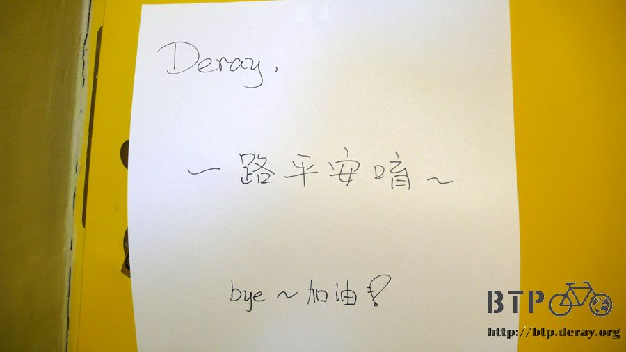
Goose posted a message for me on the door; it says
“Deray, Have a safe trip. Bye, Good Luck.”
When I turned the paper over, Goose wrote a big “GO” on the back.
I have traveled for more than 4 months now; I am beginning to miss my home.
I want to go home now. I am thinking about my semi-chaotic room,
the kitchen I can cook in, and the adorable Misasa.
In one trip, I picked up and took all my stuff downstairs to the garage Dido was parked.
I found a postcard from Gorilla in the rear clamp of Dido.
If I hadn’t met Gorilla and Goose at Poznan, this trip would be a different story.
I probably wouldn’t have stopped at Poznan.
I would still be riding Dido somewhere else with Dido’s bike chain going kalakala.
Thank you for your help, and thank you for your hospitality.
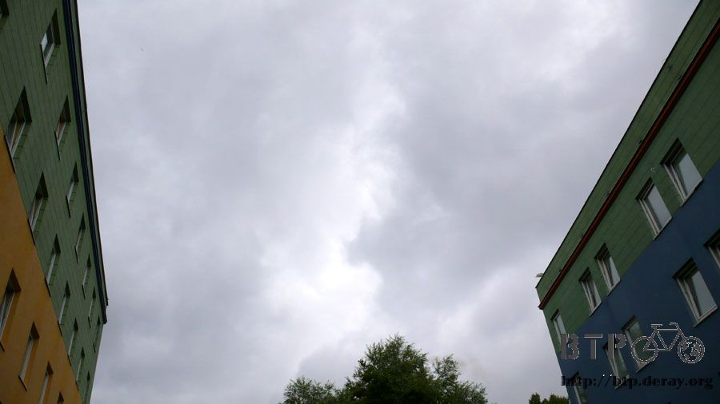
I noticed the huge layers of clouds as soon as I walked out of the dormitory door.
The sky is also dark and windy. I do not feel good about this.
Goose and Guerilla both said it will rain today.
The weather report said it will rain around noon.
I am hoping as long as I leave the rain storm area in Poznan before noon,
I will be fine. Please give me a chance to get out of this rain cloud area!
Zip tie is so convenient and easy to use.
I used zip ties to strap up the broken support bar that is holding up the back knapsack.
This way, I can put the laptop back into the back knapsack.
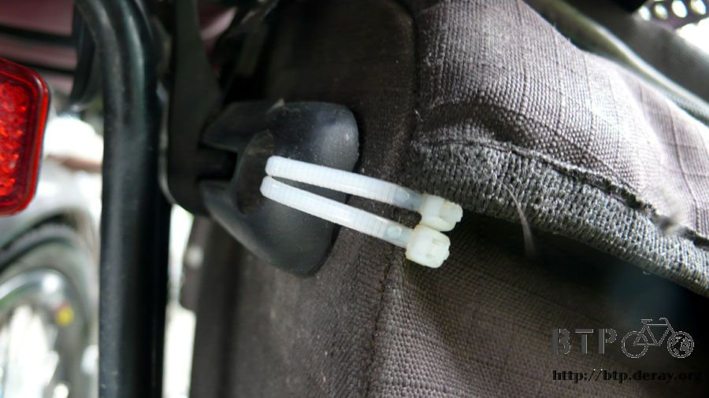
I only managed to carry the laptop on top of the front bag for one day without any accidents.
Now with the laptop back in the back knapsack,
I don’t have to worry about the laptop flying off when it was on top of the front bag.
I left a little before 9am.
So if the weather report is correct, I still got 3 hours to get out of the Poznan area before the storm hits.
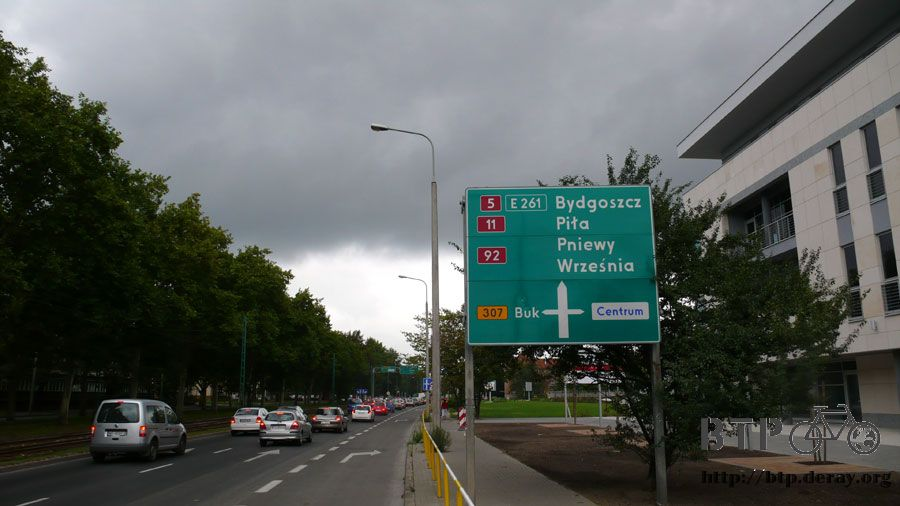
First, I need to look for the connecting road to get out of the city.
When I was studying the map yesterday, I found if I follow Red 92 way,
I can get to the Poland/Germany border. The distance is about 190km (118 miles).
This sign showing a little boy with his hat and backpack is different from the previous sign of a little girl
in braids holding a red balloon. Those signs mean be aware of children crossing; they are all very adorable signs.
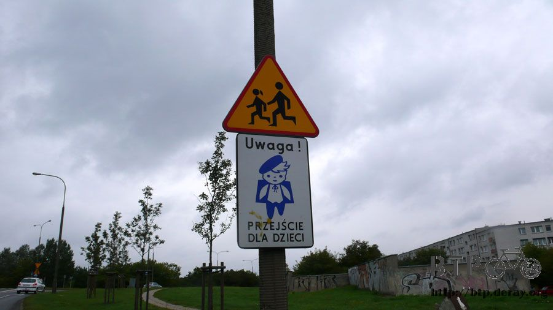
It has started to rain, although very little rain has came down.
It is still some time until noon, those rain started early. I was still in Poznan trying to figure out the road signs.
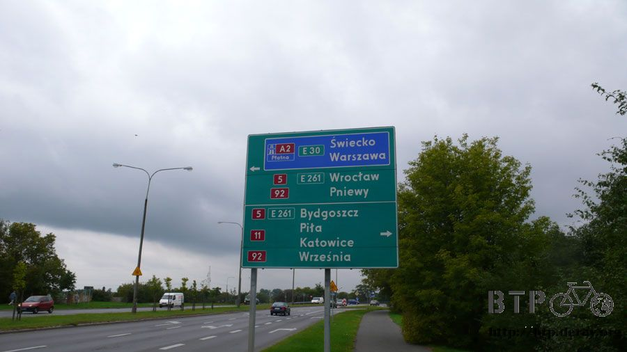
Left? Right?
When I found the correct connecting roads, the rain poured down.
I got soaked immediately. The rain came so fast; there was no place to hide.
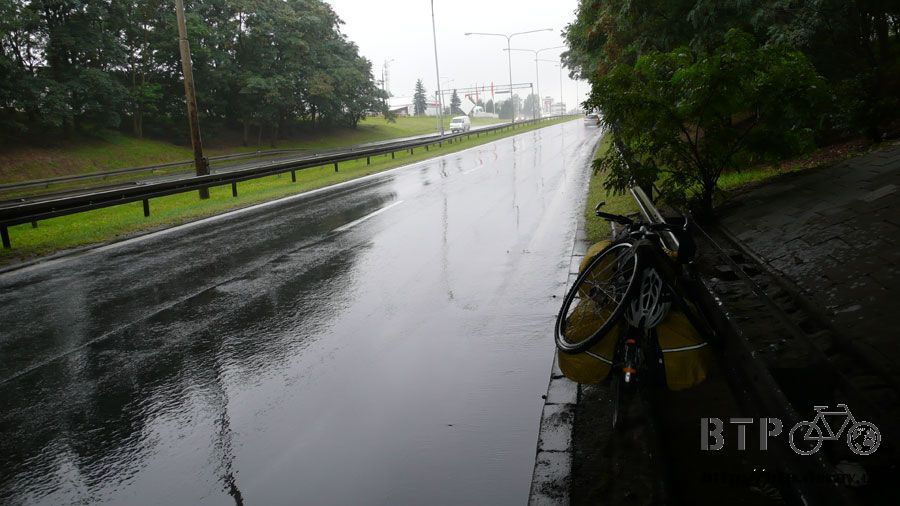
Finally there is a place under the bride where I can hide from the rain a bit.
The rain doesn’t look like it will stop anytime soon so I put the waterproof covers onto the knapsacks.
I will have to ride in the rain. It is uphill right here, so all the water flows down here collecting into huge puddles.
The trucks passing by me drove so fast and splashed me all over with dirty water from the rain.
I left wearing clean and dry clothing. In one hour, I managed to be dirty again.
My shoes and socks got wet as well, so I will be riding with my slippers on.
I left while it was still raining but the rain fall slowed down a bit soon after.
After I have been looking at the signs for awhile,
I understand that the white circle with the black letters PL and D means the border of Poland and Germany.
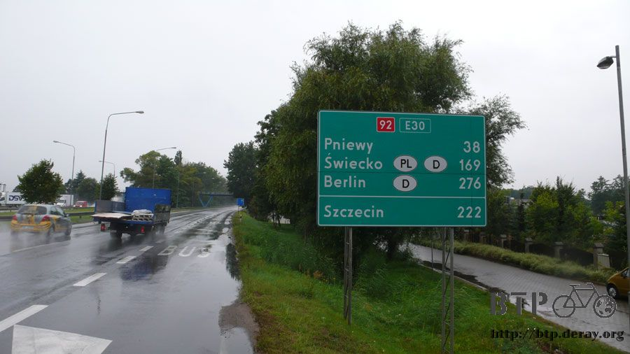
Right now I am still 169km (105 miles) from Poland and Germany border.
I am about 276km (172miles) from Berlin, Germany’s capitol city.
Because of the rain and the wind is blowing against me, it is difficult to ride all the way to the border in one day.
So whatever distance I ride today will be it. I will ride the rest tomorrow to get to Germany.
The clouds are so low to the ground. There is only a little bit distance between the field and the sky.
The highest temperature it got today is 16C (60F), so it was a bit cold today.
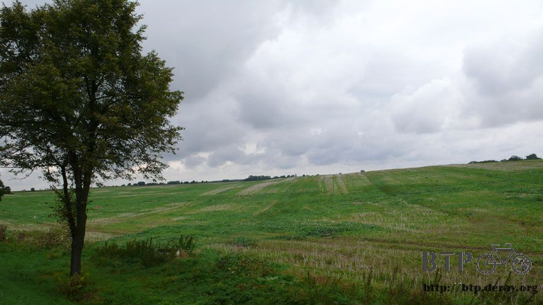
My whole body shakes from being drenched in the rain and the wind blowing against me.
I stopped and moved around a bit to warm up.
I put some pop music on before I started up again so I won’t be as cold.
It feels like the trees are saying goodbye to me on the road leaving Poznana.
Because the colder fall season is coming, if I plan to camp again I will have to take out the sleeping bag for warmth.
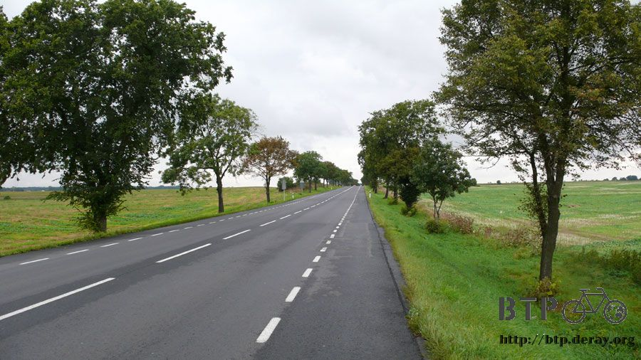
I didn’t even ride 40km (25mile) when noon rolled around.
But I left Poznan already; I no longer see signs going into or out of Poznana.
There isn’t a lot of food in my bags, my stomach is also empty, and it is time to buy some more food.
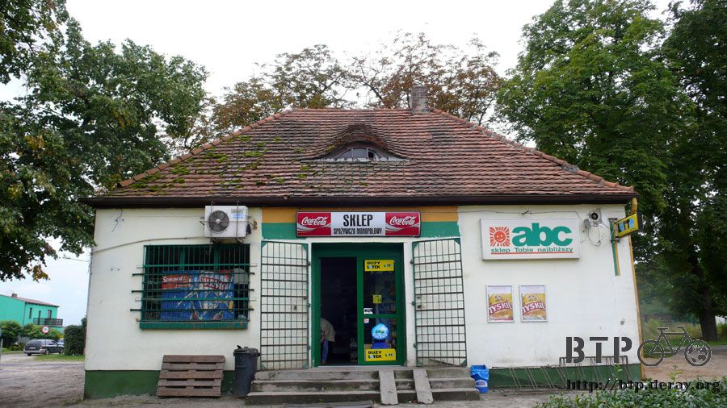
I bought a huge loaf of bread and 4 different flavors of cookies at this country store.
I told myself to eat half loaf of bread first before I started up on the cookies.
It is more important to fill the stomach first.
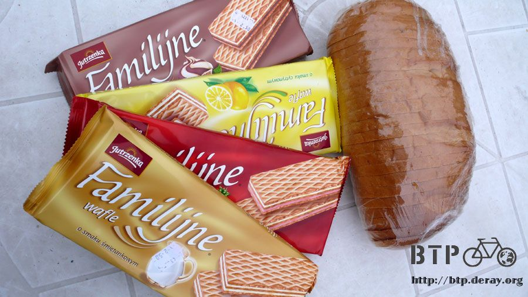
Great, the more I ride to the west, the weather looks better.
There are still a lot of clouds in the sky, but the color is no longer black.
The clouds are now white, and I can see some blue skies as well.
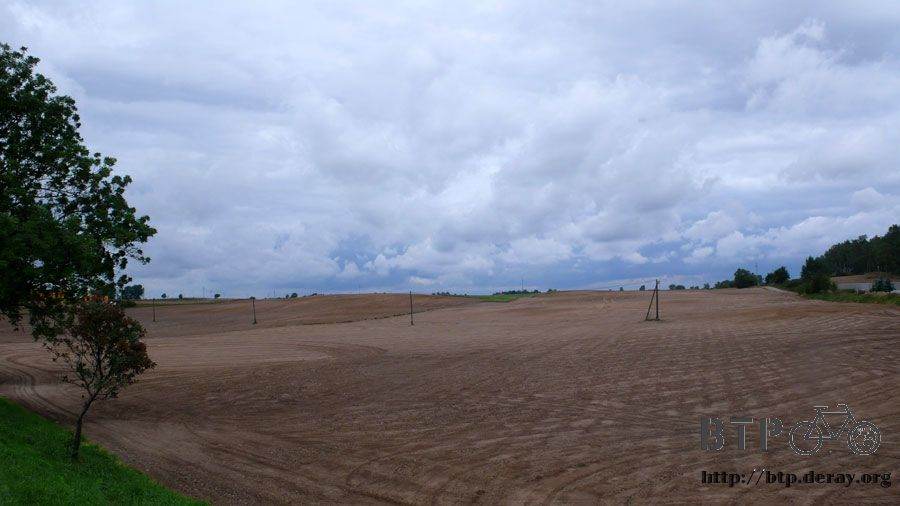
As soon as the waterproof covers dried up, I took them off the knapsacks.
Now the bags will be drying in the cold blowing wind.
The clothing I was wearing already dried up from the ride.
The only place I see any evidence of rain was the ones on my glasses.
I didn’t sweat any today because the cool weather is a little bit too cold.
Too bad the clothing already got drenched with dirty water from passing by trucks,
or I would be completely clean from today’s ride.
The closer to the border, the livelier it becomes.
There are also money exchange, rest area, hotel, restaurant, gas stations along the way.
No wonder it is the road going into Europe.
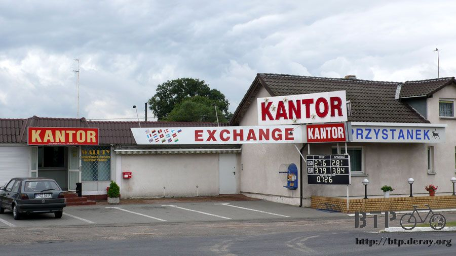
Once I leave Poland, I will be using Euros.
There are lots of 24 hour money exchange places along the way.
The sign Kantor means money exchange. The money exchange rate here isn’t as good as the ones in Poznan city.
But the number of stores increases as I get closer to the border.
It is about time to spend some Euros.
I hope I don’t try to figure out the Euro to NTW conversion every time I spend money.
Otherwise, I wouldn’t buy or eat anything.
I got very sleepy around 1:30pm.
This is probably due to riding in the rain and the fact I didn’t get to bed until 2am last night.
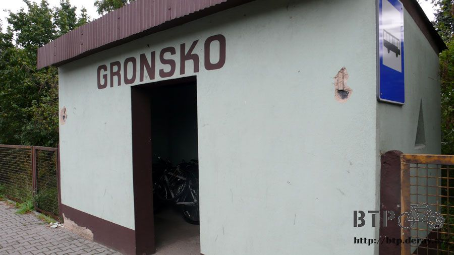
I was half asleep by the time I reached this bus stop.
It is very dangerous to ride while my mind can’t distinguish between dream and reality at this point.
It is very stupid to fall off the bike from sleeping or hitting by a car.
So I kept looking for a place to stop. I was very excited when I found this bus stop.
The nearly enclosed place provides warmth. I lay flat on the bench and took something to be my pillow.
I was asleep within seconds.
I slept here for an hour and half. I finally felt a lot better.
The sky darkened when I got up and rode again. I really miss the bright sunlight.
Other than money exchange places along the road, there are tons of places selling wood windmill and stone carving.
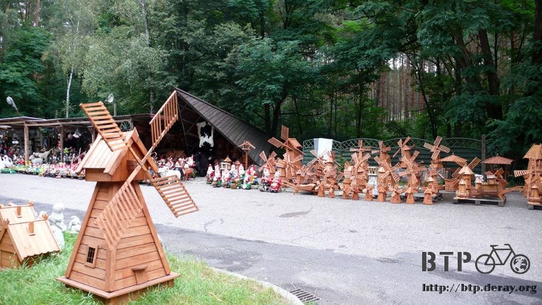
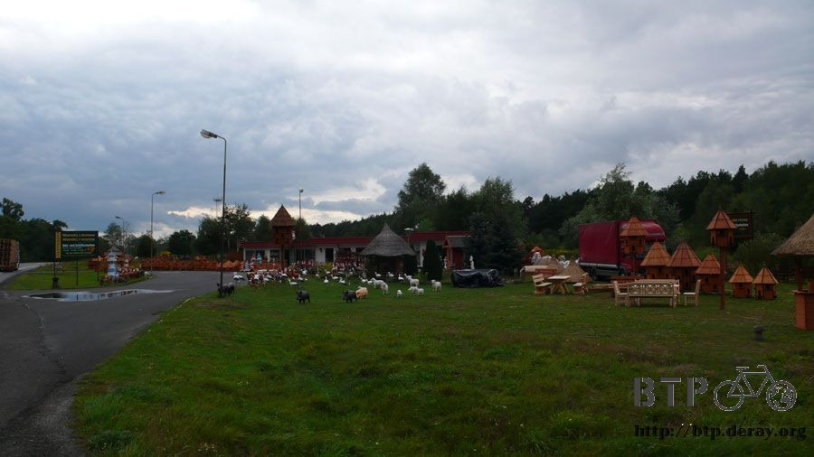
There are bunch of stone carved chicken, sheep, pork,
and cow on the grass along with wood made items with no price tag on them.
However, I wouldn’t buy any anyway. The dark cloud covered area stops here.
It is very clear where the dark cloud ends and bright sky starts.
Once I pass this hill, the sky won’t be so dark anymore.
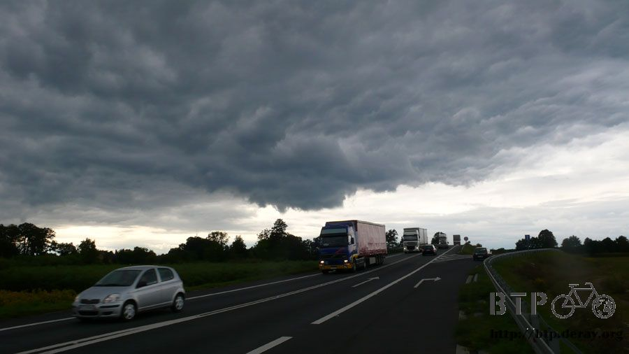
I got a little frightened right here by the sign that says be careful of crazy cow.
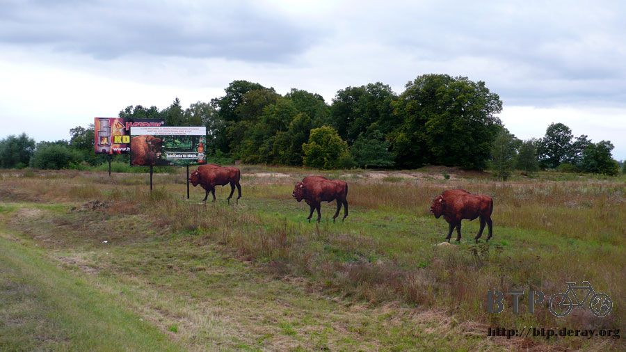
Don’t get blind sighted, the cows are made of cardboard so is the sign that says be careful of crazy cows.
Those signs are advertisement for this beer company.
This 2 stars hotel looks very comfortable, shouldn’t be very expensive either.
After all, I am still in Poland, nothing can compare to the high prices in Europe.
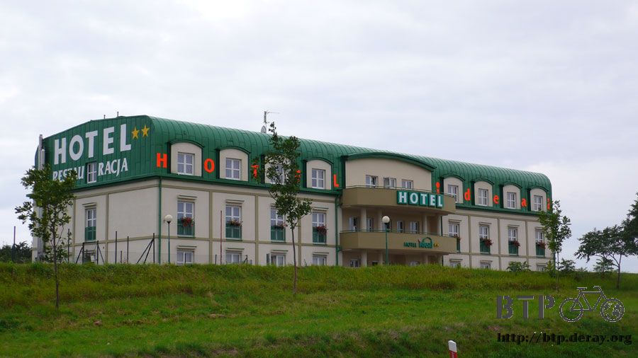
The longer I travel the less chance I get to stay in a hotel.
I once would have considered this hotel being one of my sleeping places.
But now I continue peddling along looking for my real sleeping spot.
The trees all stand up straight in one row. This feels like Poland doesn’t want me to leave.
I stayed so long in Poland, and always had nice sunshine days.
The moment I try to leave, the sky rains and the wind blows. Don’t keep me here!
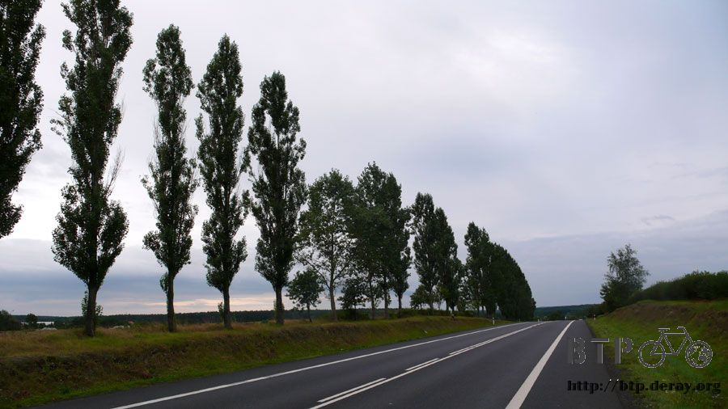
This restaurant sign looks like the restaurant has lots of delicious food.
The sign also says it takes Euro and money exchange service.
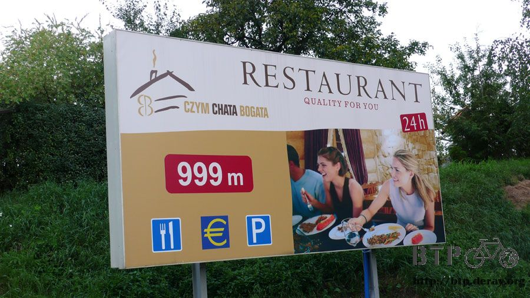
The money exchange rates don’t look very good from most places along the road, this one included.
I guess it is easy to get money exchange business along this road so there is no reason
for the stores to compete with one another on the exchange rates.
I was curious so I went in to see what money exchange place looks like.
In addition to Euro exchange, they also offer exchanges for East Europe countries.
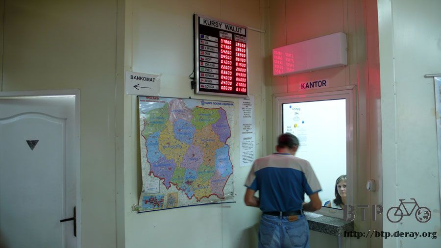
I still got enough ZLIT on me.
I will have to exchange USD for Euro later on with not so favorable exchange rates.
I plan to get to Paris in 10 days.
Unless there are any accidents, I don’t plan to stay in a hotel for the rest of the trip.
My small hope is to have a big meal, but I will have to see how much money I have got then.
Around 6pm, I finally stopped at a big gas station.
There are very few lone gas stations along the way. Most gas stations are included in a rest area.
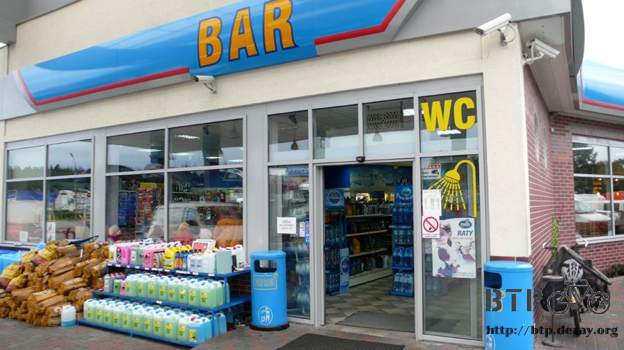
Even though it doesn’t look very impressive from the outside, this store carries lots of items including gas.
I am not sure which gas is used for vaporized gas stove.
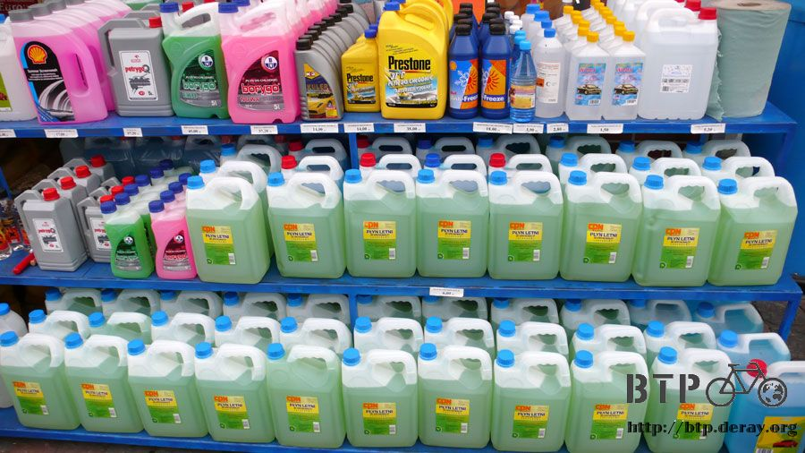
I didn’t have any extra plastic bottles with me, and the price of gas is really expensive.
For 1 L (0.26 gallon) of gas it costs $50NT ($1.56USD).
There is a huge restaurant in the gas station with lot of people in there.
There are also electronic games in the gas station.
I am very impressed with how prosper and civilized Europe is.
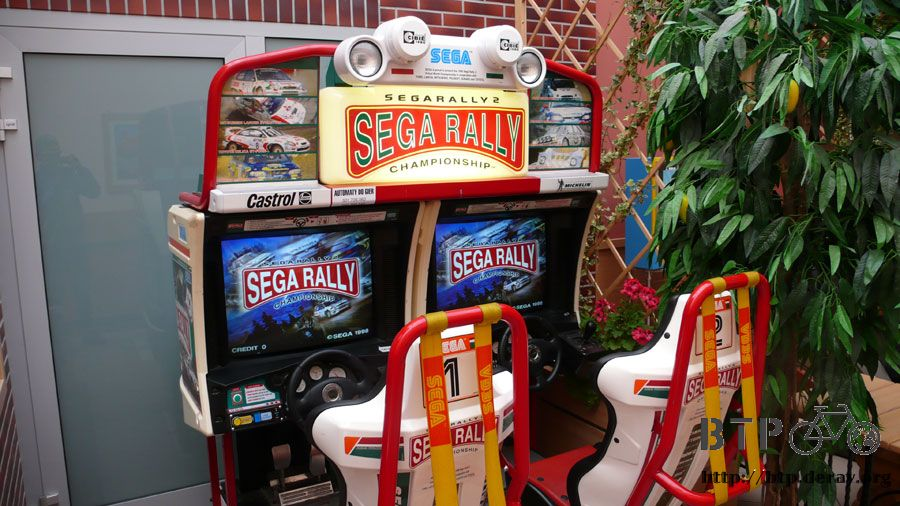
I took my water bottle to the bathroom planning to get some water and to wash my face;
even the bathroom has tons of stuff.
There is washer, dryer, and shower service in the bathroom paid by whoever uses the service.
The gas station is 24 hour service. So it would be easy to find a spot to sit and spend the night here.
There is heating in the building and free charging for electricity.
This means as long as I can figure out where to put the bike, I can stay in any of the gas stations.
I want to get closer to the border before the sun goes down.
That way, I wouldn’t have to ride as far tomorrow.
Since Poland is also in the European Union, maybe it wouldn’t be so complicated to get into Germany from Poland.
I found this empty house around 8pm.
There is some damage to the outside, but the roof is still there.
Even if the weather gets bad at night, I still got a roof over my head protecting me from the rain and the wind.
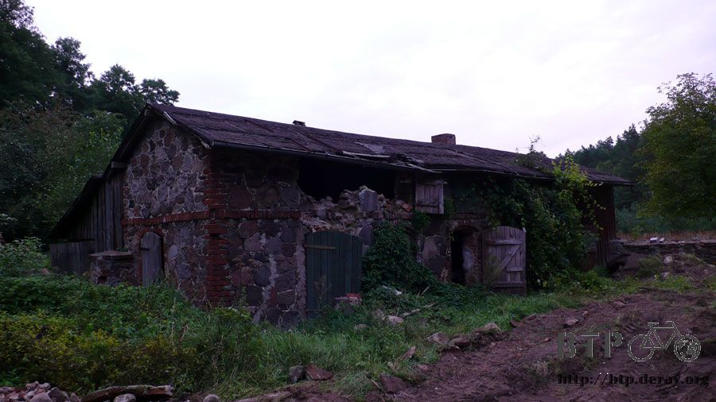
The wall is covered with vine, there is also tire tracks near the door.
It feels like no one will come here, but I still check out the area before making my decision about staying here.
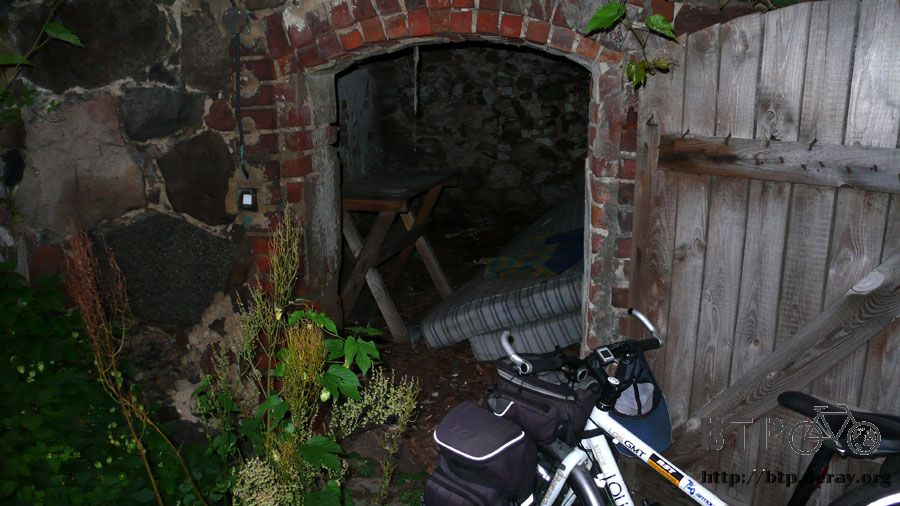
When I opened the first door, the space is small like the size of a wine cellar.
It contains a wood table and 2 twin sized mattress.
If I sleep here, I would be able to sleep on top of a mattress tonight.
It looks like the perfect stop, but something doesn’t feel right about this place.
This feels like the scene of a scary movie. There is another little room next to this one.
I was shocked when I opened the 2nd little room door, there is a pair of clean white canvas sneakers.
How come there are clean canvas shoes here?
This doesn’t make sense with the surrounding area.
My brain started making up stories… once there is a traveler who stopped here to camp.
At the middle of the night someone came to kidnap him including his luggage.
The only thing left here is his clean sneakers.
I was pretty impressed with my own imagination, but I also left here quickly.
It felt like I just got away from some horrible disaster. I continue riding toward the west.
It is very rare to see empty houses along this route.
I reached another rest area in about half of an hour.
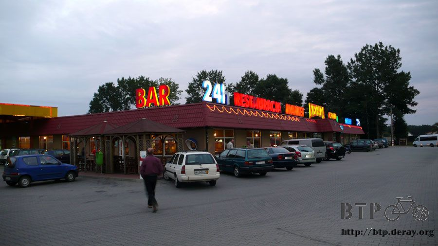
With the sky getting darker, neon lights from the stores shine through them.
The 24 hour signs and lights attract me. I just have to look at the lights to get a warm feeling.
Leading Dido along the huge glass window, I see people enjoying their dinner in the warm yellow lights.
I get hungry by just looking at them.
I circled around the building to get an idea what this place is like.
I plan to find a place here to sleep tonight since this is a 24 hour establishment;
the chance of me getting kicked out is slim.
The parking lot has tons of 18 wheelers parked there.
The gas station is also pretty big. In comparison, this little hut seems very small even though it is pretty big.
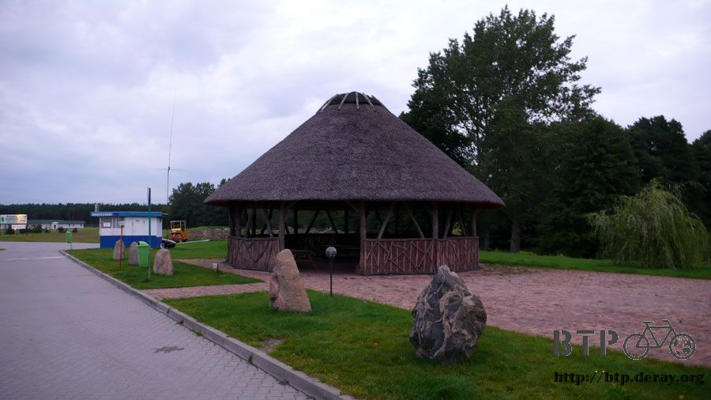
There is clean floor and furniture in the hut.
Other than me, no one comes near the hut.
Everyone goes straight to the restaurant right after they get out of their car and vice versa.
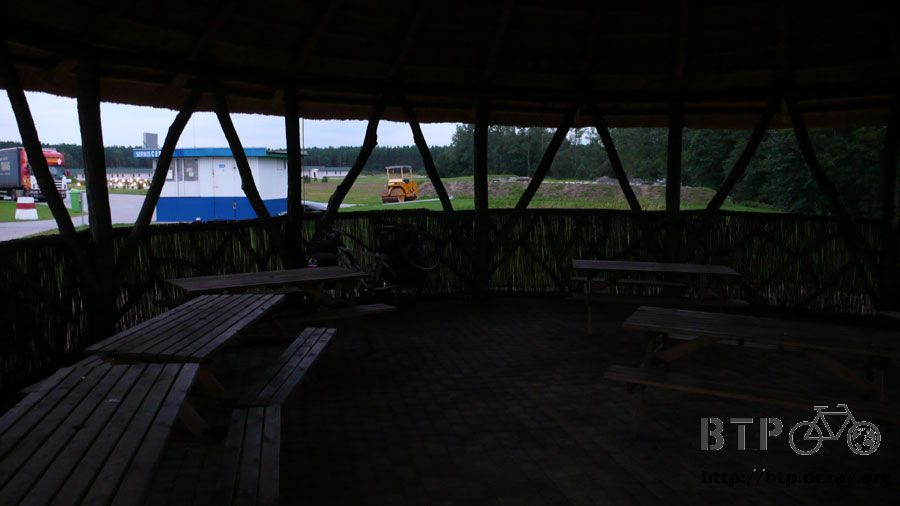
I slept on the floor of this hut for free tonight.
I was completely out by 9pm. It was pretty cold during the day, and at night time the temperature definitely dropped a lot.
I am lucky I have my tent and sleeping bag keeping me warm.
I slept in front of Dido’s front wheel.
Dido leaned against the fence part of the hut.
This is my last night in Poland. In previous passing countries I got lots of help from the locals.
By the time I reached Poland, I got help from Taiwanese people who is studying here.
To Goose, Gorilla, and everyone studying hard,
thanks for your help the last few days, and I hope everyone can finish their studies soon and be back to Taiwan.